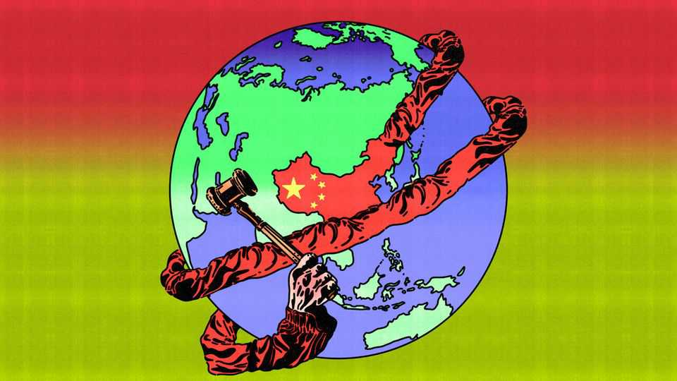

The long arm of the Chinese state
Like America, China wants its laws to apply everywhere

Aug 27th 2026
AMONG THE grievances the Communist Party has long nourished in its official telling of China’s story, the extraterritorial abuses of foreign powers loom especially large. In the 19th century it was colonial powers refusing to come under Chinese laws in the Chinese ports they controlled. In the 21st century it is America enforcing its will beyond its borders, through sanctions and export controls, against countries that displease it. All the more striking, then, that China now wants to play the extraterritorial game, waging lawfare with ever more gusto.
A notable instance came in April, when China ordered Meta, which owns Facebook, to unwind its $2bn deal to buy Manus, an AI startup registered in Singapore. Meta complied, as did Manus’s Chinese founders, who had been barred from leaving China. If the saga had an air of legal improvisation, the Chinese government is now working on laws that give it more control over flows of AI technology. For good measure, strengthened powers to impose entry and exit bans on individuals come into force in September.
These are only the latest in a series of legal measures aimed at extending China’s clout beyond its borders. The measures range broadly and touch on everything from foreign sanctions to ethnic policy. They mark a sharp turn for China, which has long resented America’s legal reach. America’s courts can pursue firms (and individuals) for their conduct abroad in big part thanks to the country’s sway over the global financial system. To the extent that China’s own long arm is retaliation against others’ sanctions, it derives its strength from the country’s dominance over global supply chains. But China is also waging lawfare abroad with a view to strengthening political control at home.
The sharp turn comes from the top. In 2018 Xi Jinping, China’s ruler, urged party officials to “take up legal weapons” befitting the country’s status as a great power. Later that year Meng Wanzhou, a Huawei executive and daughter of the telecoms giant’s founder, was arrested in Canada, at America’s request, for allegedly concealing ties to Iranian customers under American sanctions. Henry Gao of Singapore Management University argues that Ms Meng’s arrest showed alarmed leaders in China how vulnerable crucial firms and their staff were to American machinations. (China responded by arresting two Canadians on trumped-up charges and holding them as hostages for nearly three years.)
China’s first law deterring companies from obeying foreign sanctions, particularly American ones, came in 2021. Since then the party has woven extraterritorial articles into lots of new legislation. For instance, regulations issued in late 2024 require foreign firms using Chinese inputs to comply with the country’s export laws; they also give officials in Beijing the authority to vet foreign firms’ customers. This is like America’s “foreign direct product rule”, which the administration in Washington invoked to restrict the flow of Dutch-made chipmaking equipment to China. Also like America, China has taken to imposing sanctions on foreign politicians.
China’s laws against foreign sanctions, which were updated in April, are modelled on the European Union’s own “blocking statute”. That law makes it illegal for EU firms and individuals to comply with sanctions that the EU deems illegitimate. If anything, China’s laws go further. They make it illegal for any foreign company to obey sanctions that discriminate against Chinese entities. In line with the new laws, JPMorgan Chase and Citigroup, two giant American banking groups, are being sued for a total of $44m in Chinese courts for freezing the assets of a sanctioned Chinese oil trader on the order of America’s Treasury Department. In June the Supreme People’s Court cited the new laws in a judgment against a Singaporean firm for refusing to deliver cargoes of electronics for a sanctioned company in Hong Kong.
China’s moves are a predicament for foreign firms that are forced to choose whose laws to abide by. In May courts in London and Chongqing, in south-west China, handed down sharply different rulings in a licensing dispute between Samsung, a giant South Korean conglomerate, and ZTE, a Chinese telecoms-equipment maker. Judges in London held that Samsung owed ZTE some $392m, while the Chinese court found ZTE was owed nearly double that amount. Satisfying one court may mean defying the other. The consequences for Samsung of not recognising the Chongqing court would potentially be more severe than if it defied the English one. Huge multinational firms like Samsung have deep exposure to China, which is both a market and a supplier of critical goods to them. China’s long arm relies on cold, hard leverage, says Mark Jia of Georgetown University Law Centre.
China’s long arm is also concerned with controlling individuals and organisations deemed to threaten the country’s domestic security, very broadly defined. In July a law on “promoting ethnic unity” took effect; it criminalises any act abroad that “undermines national unity”. A cyber-crime bill now before the National People’s Congress, China’s largely rubber-stamp parliament, will make it a crime to host or transmit information abroad that harms China’s “public interests”. Another law under consideration codifies powers to collect evidence on corruption at Chinese entities abroad.
Many of the recent laws and regulations formalise and strengthen the state’s existing coercive reach around the world, which has involved kidnapping Chinese critics of the regime and running covert police stations designed, in part, to monitor and control the behaviour of Chinese overseas. The party’s extensive united-front activities abroad have also long sought to bolster its influence, hold sway over communities of overseas Chinese and blunt criticism of China.
The legislative push reflects a desire to centralise control, says Yalkun Uluyol of Human Rights Watch, a monitor; codifying rules helps strengthen the bureaucratic means. Mr Jia adds that by vesting in itself the powers to retaliate against foreign sanctions, the state sends a message of resolve to others.
Much of China’s flurry of extraterritorial law-making, including the provisions on ethnic unity, is really about the Communist Party’s long obsession with safeguarding internal stability. But the growing reach of its laws reveals much about China’s ambitions under Mr Xi to shape an external environment more to its liking—one in which it is no longer the victim of world history but its maker. ■
Subscribers can sign up to Drum Tower, our new weekly newsletter, to understand what the world makes of China—and what China makes of the world.